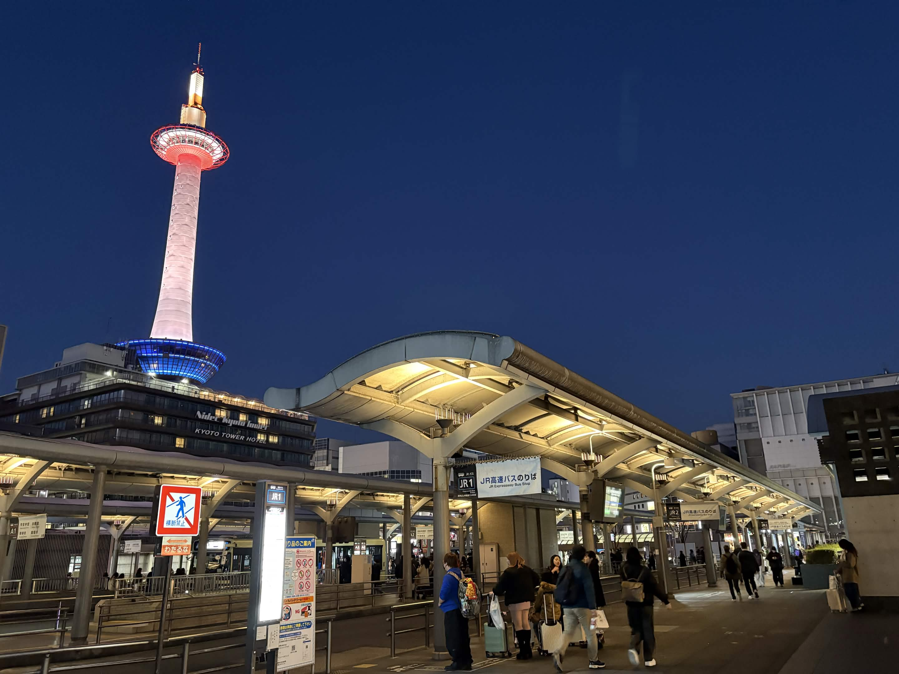
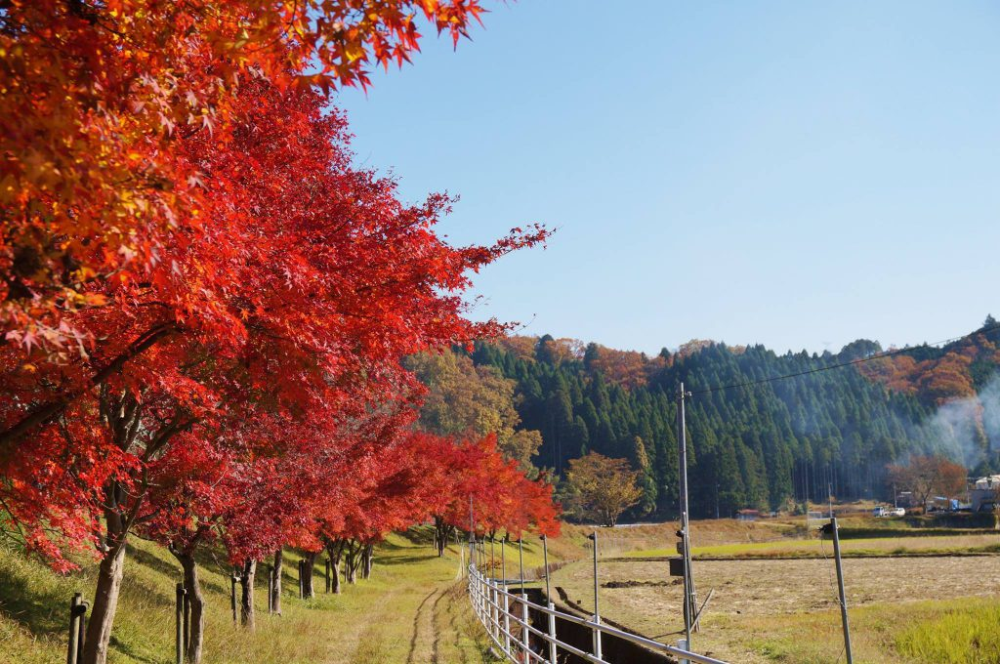
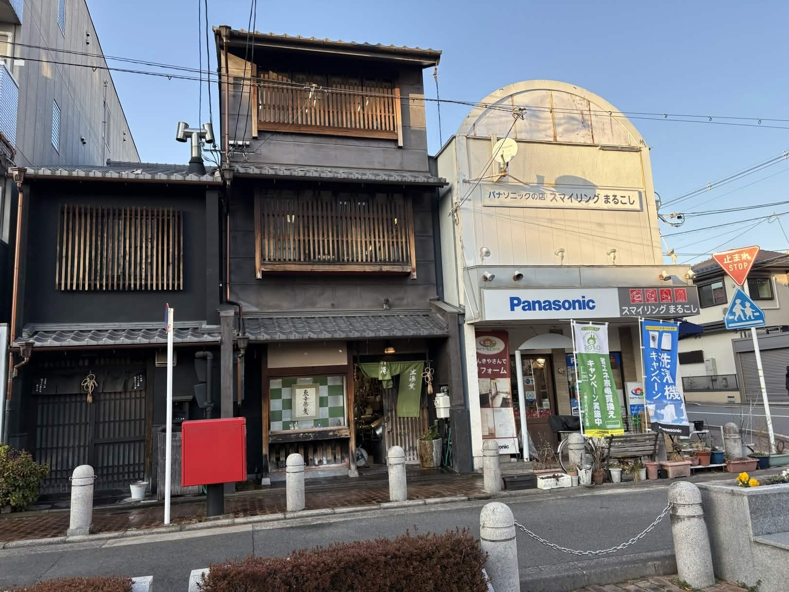

乗れるバス、何本後？
サンプルセンテンスサンプルセンテンス


観光客数 5606 万人
世界有数の観光都市となった
京都
しかし、市民や観光客からは
「乗れないバス」への不満が聞こえる。
あまりの混雑で、観光地へ向かう市バスには人ひとりたりとも入る隙間がないこともしばしば。
何本バスを見送れば、お目当てのバスに乗れるのか―
そして、市民も観光客も快適に移動できる交通構造を考えていく。


「えっ、これ乗るの？」
博物館三十三間堂から、祇園へ。
やってきた市バス206号系統は、もはや1人も乗せる余裕はない。
京都市バス 206号系統。京都駅から、清水寺、祇園といった東山エリアの観光地を進み、北大路バスターミナル、金閣寺、そして京都駅へ。京都の主要エリアをぐるっと一周する大動脈だ。
10分以上待ったバスがこの調子。次も、乗れるかわからない。
京都では平日休日問わず、このような光景が繰り返されている。
「えっ、これ乗るの？」
博物館三十三間堂から、祇園へ。
やってきた市バス206号系統は、もはや1人も乗せる余裕はない。
京都市バス 206号系統。京都駅から、清水寺、祇園といった東山エリアの観光地を進み、北大路バスターミナル、金閣寺、そして京都駅へ。京都の主要エリアをぐるっと一周する大動脈だ。
10分以上待ったバスがこの調子。次も、乗れるかわからない。
京都では平日休日問わず、このような光景が繰り返されている。
----------------------------------------------------
京都市バス 206号系統。京都駅から、清水寺、祇園といった東山エリアの観光地を進み、北大路バスターミナル、金閣寺、そして京都駅へ。京都の主要エリアをぐるっと一周する大動脈だ。
10分以上待ったバスがこの調子。次も、乗れるかわからない。

取材当日の2月8日は市内は大雪。
さらに、衆院選も行われていた。
それでも、なお、五条坂のバス停は多くの乗客が乗り降りする。
降りる人はみな一斉に清水寺へ。
清水寺への最寄りのバス停は五条坂と、清水道の2ヶ所。
2021年のデータでは、合わせて平日乗降客数は8062人。
(注 コロナ渦)
京都市バスでも8位ほどの乗降客数になる。
また、2024年から運行されている観光特急バスも停車する。
しかし、このバスを見送る人も多い。
なぜだろうか。
その原因は、通常の2倍の運賃か、それとも知られていないだけか。
現時点ではまだ分からない。
しかし、混雑緩和を目的とした施策が、必ずしも現場で選ばれているとは限らないと言えそうだ。

京都の街には地下鉄が少ない。
現在運行している路線は2路線。
JRや京阪・阪急も走っているが、市内各地に点在する観光地へ向かうにはバスの存在が欠かせない。
最寄り駅から主要観光地までの平均はOOkm 徒歩ではXX分程度だ。
実際に清水寺から清水五条駅はOOkm, 銀閣寺から出町柳駅もOOkm離れている。
さらに、いずれの駅も、京都駅から鉄道1本では向かうことはできない。
(注: 主要観光地は、金閣寺、銀閣寺、清水寺、北野天満宮、祇園、平安神宮としている。それぞれの最寄り駅は、金閣寺は北大路駅、銀閣寺は出町柳駅、清水寺は清水五条駅、平安神宮は東山駅としている。)
さらに、京都のバスの特徴は、全本数の内1割以上が京都駅や四条河原町を含む上位10停留所に集中している構造にある。
次点に、四条大宮が続く。

また、似たような構造の都市として福岡が挙げられる。
福岡もバス社会。
市内のほとんどのバスが繁華街である天神または博多に直行する。
さらに福岡空港、博多、中洲、天神といった主要繁華街や観光地、交通拠点は地下鉄1本でカバーされている。
この違いが、移動手段の選択を大きく左右している。
一方で、京都のように、京都駅・河原町という市内二大拠点バス中心で担っている点に、構造的な特徴がある。
まさに、「偏在」である。
この区間は、バスであれば230円で直通で行けるが、鉄道を使うと、1回の乗り換えに加え、390円という割高な運賃が掛かる。
これは、市営地下鉄と阪急電車の初乗り運賃を二重に支払わなければならないためだ。
こうした、運賃体系といった構造にも、鉄道よりバスを選ばせる要因がありそうだ。

京都を混雑を避けながら移動する方法。
それは、鉄道の有効活用である。
確かに、京都には地下鉄が烏丸線と東西線の2路線しかない。
しかし、実際には、地下鉄駅から、もしくは地下鉄駅まで市バスを利用することで、
混雑を避け、混雑の中に身を埋める時間を短くできる。
また、市営地下鉄のほか、市内には京阪電車、阪急電車、JR嵯峨野線など、様々な路線が利用できる。
これらを組み合わせることもできる。より多くの人々が鉄道併用をすれば、鉄道の大量輸送能力を考えると、大きな混雑緩和が期待できる。
しかし、問題は、こうした構造が見えていないことである。
すなわち、乗り換えアプリやモデルルートにて、京都を移動する多くの人々に鉄道併用という選択肢がきちんと提示されていないのである。
いくつか、鉄道を併用した京都駅から主要観光地へのモデルルートを見てみよう。

混雑の背景には、清水寺や金閣寺、祇園といった「定番の京都」へ人の流れが集中している現状がある。
しかし視点を少し広げれば、そこにはまだ多くの人に知られていない京都がある。
大原では、山あいの集落と田畑の風景の中を進みながら寺院へ向かう。
京北には、市内中心部とはまったく異なる森林と清流の暮らしがある。
嵯峨野でも、渡月橋周辺の喧騒から少し離れた大覚寺には、広い空間と静かな時間が残されている。
これらは「特別に遠い場所」ではない。
鉄道やバスを組み合わせれば到達できる、同じ京都市内の風景である。
にもかかわらず、多くの観光客の動線には組み込まれていない。
そして京都では、こうした地域に目を向け、観光の流れを分けていこうとする動きもすでに始まっている。
京都市観光協会による「とっておきの京都」も、その表れの一つだ。
つまり京都は、ただ人が集中する都市なのではない。
集中を前提としない、新しい観光のあり方を模索している都市でもある。
行き先の選択肢が増えれば、人の流れは変わる。
それは混雑を避けるためだけではなく、京都という都市の多層的な姿に出会うための分散でもある。

京都。それは1000年の都でもあり、日本の文化的な首都である。
そして、現代では年間5000万人以上の観光客数を誇る、世界有数の観光都市でもある。
日本全国、そして世界から多くの観光客がやってくる。
修学旅行生や、新婚旅行などの祝い事を機に訪れる人もいる。
しかし、同時にこの街には「暮らし」がある。
働きに出る人々。
通学する学生たち。
観光客をもてなす人たち
。
そして、観光客と地域住民が、同じバスに集中する。
あまりにも、集中しすぎている。
ー
その原因は、画一化された観光ルート。
知られていないとっておきの観光地。
鉄道よりもバスを優先させる運賃体系。
鉄道会社ごとに分かれた輸送形態。
混雑を考慮しない乗り換え案内。
それらが相互に重なりあい、「集中」
または、「偏在」
これが起きている。
そして、偏在は混雑となり、
混雑は、ストレスになり、怒りになる。
それは市民、観光客いずれにも不幸なことである。
-
しかし、解決策は存在する。
それは、鉄道という大量輸送の選択肢。
鉄道からバス、バスから鉄道という、交通手段の分散。
そして、混雑を可視化する、情報技術を用いた可視化。
「知らないから、集中する。」
ならば、
「見えれば、分散できる。」
本稿で示した、トピックでこのことが具体的に示される。
さらに、今回開発した「乗れるバス、何分後?」と「京都ゆったりナビ」は、単なるアプリやツールではない。
それは、都市構造を見える化し、
市民、観光客の双方に現状と選択肢を示し、
混雑という社会的コストを減らすための、
新たな、「データジャーナリズム」のカタチの提案である。
-
「オーバーツーリズム」という言葉が独り歩きしている、京都。
しかし、京都は避けられる街になる必要はない。
選ばれ続ける街であればいい。
観光客も市民も、少しだけ、ほんの少しだけ、もっと賢い選択ができる街へ。
偏在から分散へ。
混雑から快適へ。
その一歩を、データジャーナリズムの新たなカタチとともに。
2026年 2月 伊丹の白詰草